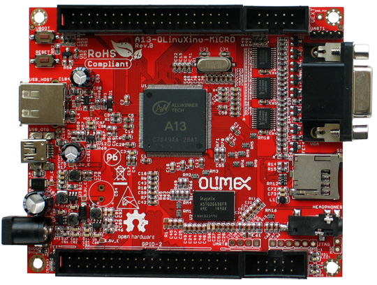
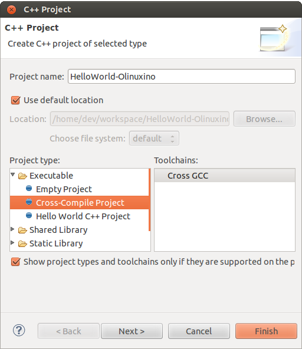
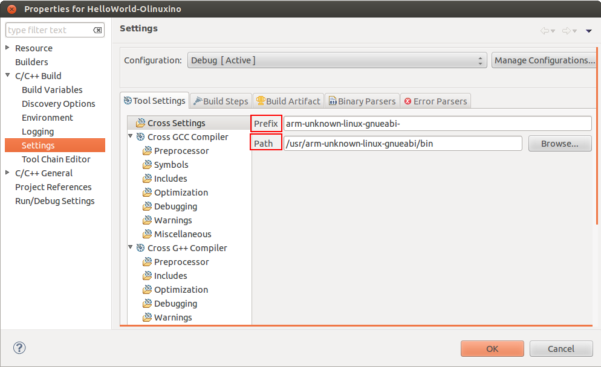
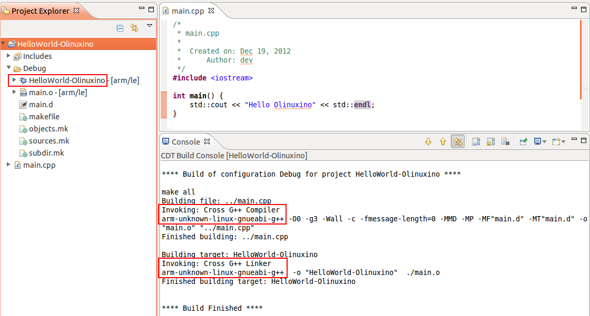
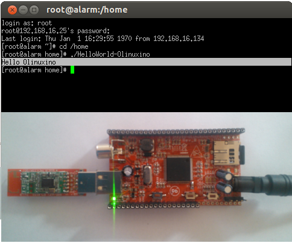
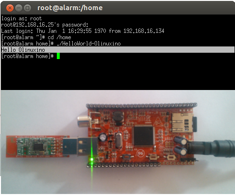

Embedded GUI Framework
Overview
Embedded GUI Framework
Background:
We live in a world surrounded by computers - from our (arguably excessive) coffee machines to our cell phones and cars, microcomputers play an integral role in our everyday lives. With the cost of electronics rapidly decreasing, and touchscreens becoming commonplace even on low cost consumer products, a unique need has arisen for a unified way of creating user interfaces on embedded devices.
Why we need it:
It is easy for small companies and hobbyists to prototype microcontroller based products, such as environmental sensors and other equipment. However, user interface design is generally left at basic pushbuttons and potentiometers, with at most a simple text display on a serial LCD. The barrier to entry into high end touchscreen interfaces is high: it often involves more development/work than the device itself, and there exist few unified solutions for multi-processor and display targeted builds. The few solutions that do exist are prohibitively expensive: For example, a license of Segger EmWin costs $12,300… per target architecture/CPU! The Embedded GUI Framework aims to be a “drop in” interface for embedded developers to rapidly incorporate touchscreens into projects.
How/Technologies:
The Embedded GUI Framework will be built in C to allow use with the vast majority of embedded toolchains in use. All hardware specific code will be isolated into header files, with preprocessor directives to allow targeted builds for different architectures. As a testing platform, TI Stellaris ARM M4 microprocessors will be used, driving a low cost 480 x 272px TFT touchscreen via a 24 bit parallel interface (the most common interface for LCD drivers).
Features:
- Controls/Widgets
- Pushbutton
- Slider/Fader
- Label/Text control
- Tabs/groups for controls
- Events
- Touchscreen ‘coordinates’
- Button events (‘callback’ / function pointer)
- Encapsulated hardware specific code (to allow easy addition of new architectures/display drivers)
Vital Vio LLC:
Vital Vio is a privately held biomedical and lighting design startup focused on manipulating light to address real world problems by developing innovative methods of delivery. Through precise combination and control of visible light, Vital Vio products utilize light for more than just illumination. Vital Vio units currently focus on the benefits of passive decontamination for human health aspects and environmental safety from microorganisms. This RCOS project will be under the guidance of Vital Vio, and supported in part (office space, some additional benefits) by Vital Vio LLC. The scope of the Embedded GUI Framework does not include any Vital Vio specific features, and is useful to a variety of other applications involving touchscreen interfaces. Vital Vio’s involvement in the project offers a unique and valuable opportunity for an open source project from RCOS to be immediately incorporated into a production product.
Hardware
A13-OLinuXino-MICRO

Features
- A13 Cortex A8 processor at 1GHz, 3D Mali400 GPU
- 256 MB RAM (128Mbit x 16)
- 5VDC input power supply with own ICs, noise immune design
- 1 USB host
- 1 USB OTG which can power the board
- SD-card connector for booting the Linux image
- VGA video output
- LCD signals available on connector so you still can use LCD if you diasble VGA/HDMI
- Audio output
- Microphone input pads (no connector)
- 1 User key
- 4 Mount holes
- UEXT connectorfor connecting addtional UEXT modules like Zigbee, Bluetooth, Relays, etc
- GPIO connector with 68/74 pins and these signals:
- 17 for adding NAND flash;
- 22 for connecting LCDs;
- 20+4 including 8 GPIOs which can be input, output, interrupt sources;
- 3x I2C;
- 2x UARTs;
- SDIO2 for connectinf SDcards and modules;
- 5 system pins: +5V, +3.3V, GND, RESET, NMI
- Dimensions: 100 x 85 mm (3.950x3.350'')
- Optional low-cost 7" LCD with touchscreen
FAQ
- There is only 1 USB host on the board, how can I connect simultaneously my USB mouse and USB keyboard?
- You should use external USB hub.
- What software is available for the board?
- The software development changes very rapidly. So far we have reports for number of Linux distributions working properly with the MICRO, please visit the WIKI and the GitHub pages of A13-OLinuXino-MICRO to find suitable distributions;additionally you might want to check on the forum for additional help
- I bought A13-LCD7-TS but when I connect it to the A13-OLinuXino-MICRO I receive no image on the display. What do I do wrong?
- The default A13-OLinuXino-MICRO image is set for a VGA display and resolution. To use LCD with A13-OLinuXino-MICRO you need to upload new image with the appropriate settings.
- The download links for the images may be found in the wiki article for A13-OLinuXino.
- What is the operating temperature range of A13-OLinuXino?
- The board works in the commercial temeprature range 0+70C
- Where can I find the Android image for the A13-OLinuXino-MICRO?
- At the moment we haven't tested Android booting from SD card. Android from SD card is currently not officially supported. However note that there are people reporting success getting it to run - head to the Olimex forums for more recent info.
Links
General
- https://github.com/OLIMEX/OLINUXINO
- https://www.olimex.com/Products/OLinuXino/A13/A13-OLinuXino-MICRO/
- http://linux-sunxi.org/Main_Page - for discussion and community support
- https://www.olimex.com/forum/ - for OLinuXino development discussions
Resources
Hello World
Programming for A13 in debian
- There are 2 main methods to create programs for your A13 board.
- Cross compiling
- Setting up a tool chain to compile on another system, which is typically faster and easier to manage.
- Programming on board
- installing a compiler to compile directly on the board
- The sections below contain instructions for these 2 methods
Cross Compiling
- Cross compiling is usually performed on another linux machine, it seems the most common for doing this is ubuntu.
- If you have compiled the kernel and setup the SD card you will already have most of the tool chain setup on your machine
- Setting up the tool chain
- The following instructions are to be performed on a linux machine which is not the A13 board.
- Complete the following steps to setup the tool chain.
- These instructions have been tested on ubuntu only however they may work for other distributions.
- Instructions
- Install eclipse
- Eclipse is a GUI which enables easy compilation and debugging when the appropriate tools have been installed.
- This may be able to be installed using the package manager on your linux system.
- Manual eclipes install
- To manually install the most up to date eclipse perform the following:
- Go to the eclipse download section
- Eclipse download Download to your linux machine the suitable eclipse version.
- Decompress the downloaded file into any directory you like by moving the downloaded file to your desired directory. Open a terminal, go to the directory and decompress with the command
tar -xzvf FILENAME.
- This will create a directory in this location called eclipse Within this directory is the executable eclipse.exe
- It is recommended to create a launcher on your desktop which points to this executable file to make it easier to start.
- To manually install the most up to date eclipse perform the following:
- Manual Java runtime install
- As eclipse is written in java the jave runtime is required as well.
- Download the java runtime.
- Java download page Download the java RPM file that your eclipse version requires.
- Follow the instructions on the java download page beside the download to install
- Your eclipse installation should now start up.
- Install the tool chain
- The instructions contained in this wiki were originally sourced from this page Debugging on embedded using opensource tools
- To compile code for the A13 the ArmV5 tool chain is required.
- Change to super user
# sudo su
- Install compilers, libs and make # apt-get install gcc g++ make libncurses5-dev
- Open the repository file "/etc/apt/sources.list"
- Add the following line
deb http://www.emdebian.org/debian/ squeeze main
- update the repository info
# apt-get update
- install some packages
# apt-get install linux-libc-dev-armel-cross # apt-get install libc6-armel-cross # apt-get install libc6-dev-armel-cross # apt-get install binutils-arm-linux-gnueabi # apt-get install gcc-4.4-arm-linux-gnueabi # apt-get install g++-4.4-arm-linux-gnueabi # apt-get install uboot-mkimage
- The tool chain should now be installed
- Creating a hello world program using eclipse
- Follow this tutorial to create a hello world program Debugging on embedded using opensource tools
- Install eclipse
- Some issues found for some users:
- Issue : After having installed eclipse and the toolchain the path and prefix for the compiler as listed in the example could not be found.
- Solution : Look for the same prefix in a different path, /usr/bin is likely to hold the files.
- Issue : Having built the program and copied it to the A13 board it will not run resulting in "permission denied"
- Solution: Check the permissions for the file are set to allow execution by typing #ls -l . if you dont see a lot of x's (3) in the first column its likely your cause. To change the permissions type #chmod ugo+x FileName
- Issue : executing the file returns "command not found"
- Solution: A library file can not be found this is either /lib/ld-linux.so.3 or /lib/ld-linux-armhf.so.3 . To find the specific one your file is looking for open the executable in a text editor on the first line or 2 you will find the file name its looking for ld-linux.so.3 .
- Issue : After having installed eclipse and the toolchain the path and prefix for the compiler as listed in the example could not be found.
- Programming on the A13 board
- Below is a way to create a hello world program on your A13 olinuxino board in a suitable folder create your code file by typing
nano hello.c
- type the following into the program
#include <stdio.h> main () { printf("hello world\n"); } save by pressing ctrl o exit by pressing ctrl x
- compile the program in the command line by typing
gcc -o hello hello.c
OR
gcc-4.6 -o hello hello.c
- make the file executable by typing
chmod z+x hello
- execute the binary file
./hello
- this should print out hello world
- if it has this means you have created a program on your A13 olinuxino board
- Below is a way to create a hello world program on your A13 olinuxino board in a suitable folder create your code file by typing
Debugging on embedded using opensource tools (part 1) {source}
Overview
- written by brakova on Dec 19 2012 1:39 PM
- Just a few days ago we got a great surprise from Olimex - the new Olinuxino A13! After setting up the SD card, installing Debian and trying the Agilart platform works on it we wanted to set up the developing environment in order to make it easy to cross compile and cross debug C/C++ code that would run on the microcontroller from the host machine.
- So here is how we worked our way through this and managed to get cross compiling and cross debugging working with the standart GCC and GDB on the Olinuxino Micro board. The same set of steps would work for other microcontrollers too, you just need to have the right toolchain.
- First make sure that you have installed the Eclipse CDT plugin. You cal also install the whole Eclipse IDE for C/C++ Developers. Then you need the appropriate arm toolchain against which you can cross compile your code. In order to generate programs that can run and be debugged on the Olinuxino, we need to install the appropriate compiler and debugger and set up the project in Eclipse.
- Setting up your toolchain for cross compilation
- You don't need ARM based host to develop software for Olinuxino. You can do everything with Ubuntu and a proper cross compiler. To produce code that will run on the Olinuxino you need a toolchain with ARMv5 support. Because Ubuntu has default toolchain arm-linux-gnueabi for ARMv7arm, solution is to get proper toolchain from Debian repositories.
sudo apt-get install gcc g++ make libncurses5-dev
- Add the following line to /etc/apt/sources.list
deb http://www.emdebian.org/debian/ squeeze main
- Install the following packages:
sudo apt-get install linux-libc-dev-armel-cross sudo apt-get install libc6-armel-cross sudo apt-get install libc6-dev-armel-cross sudo apt-get install binutils-arm-linux-gnueabi sudo apt-get install gcc-4.4-arm-linux-gnueabi sudo apt-get install g++-4.4-arm-linux-gnueabi sudo apt-get install uboot-mkimage
Set up a GCC Cross compiler project in Eclipse
- Open Eclipse and click on File >> New >> C++ Project
- In the Project Type section select the Cross-compile Project. This is how eclipse will know that we don't want to use the standart gcc but another tooolchain(arm-unknown-linux-gnueabi-gcc).
- When you create the project add a simple main.cpp source file.
- Here we'll do the 'Hello World' in this case 'Hello Olinuxino' project.
- Then go to the project's Settings page and check the cross compiler configuration settings. Have a look at the Path and the Prefix options: 
- Then we are ready to build the project. In the console check that Eclipse is using the right gcc toolchain. In this case it should be 'arm-unknown-linux-gnueabi-g++'. If it doesn't work for some reason check that the toolchain is installed correctly by building the preject by manually from the terminal. If for some reason you have problems with the toolchain you can download build it yourself by following this guide from the Archlinux community.
- 
- Get the executable on the Olinuxino. An easy way to do this is usinf sshfs:
sshfs root@olinuxino-hostname:/ ~/olinuxino
- It will ask you for the password - remember that the default one is root. Here we use Olinuxino Micro, but any arm-based microcontroller would be the same. You just need the right toolchain. for Raspberry Pi you even need the exact same toolchain.
- 
- The next part would cover what are the steps you need to do in order to coss debug from your GCC Exclipse project on the Olinuxino Micro.
- 
- Cheers!